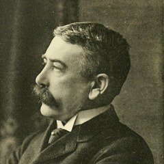

言語と思考
青信号はなぜ青なのか。フランス語には蛾がないのか。ロシア語話者は青を速く見分けるのか。ソシュールが100年前に残した主張から始めて、現代の実験室までたどる。
『一般言語学講義』がソシュールの死後3年、教え子の手で刊行される
同年の世界：ヴェルダンの戦いとソンムの戦い。前年アインシュタインが一般相対性理論を発表。
関連記事：色は存在しない（D-01）／ 言葉で世界は変わるのか：サピア=ウォーフ仮説（L-01・近日公開）
冷蔵庫を開けて、中にあるものを「野菜」「肉」「飲み物」と無意識に分けている。きゅうりは野菜で、ベーコンは肉。トマトは、たぶん野菜。だが本当は果物だと言われたことがあるかもしれない。
この線引きは誰かに教わったわけではない。それなのに、ほぼすべての日本語話者がきゅうりを野菜と呼ぶ。線は、あなたの中にあって、あなたの中だけにあるのではない。
言葉は、ものに貼られたラベルではない。言葉が先に境界を引き、そのあとで世界が「そういう形」に見えてくる。
ソシュールが遺した一つの本から、言語が世界に切れ目を入れているという主張をたどる。同じ現実を別の言語で覗くと、境界の位置が動く。読者は自分の母語が引いている線を、自分の目で確かめることになる。
少し回り道から始めたい。言語学という学問がある。言葉を研究する学問、と言ってしまえばそれまでだが、その中身は意外と広い。ある言語の文法を細かく記述する仕事もあれば、世界中の言語を比べて共通点を探す仕事もある。子どもがどうやって母語を身につけるかを追う人もいれば、脳のどの部分が言葉を処理しているかを調べる人もいる。どの言葉がどの言葉から枝分かれしてきたかを、化石のように復元していく人もいる。
この記事の主人公、フェルディナン・ド・ソシュールはそのうちの一人だ。ただし彼がやったのは、個別の言語を記述する仕事でも、系統を辿る仕事でもなかった。言語というもの自体の仕組みを考える——彼はその仕事を始めた人で、後に「近代言語学の父」と呼ばれることになる。彼以前の言語学は、ギリシャ語とサンスクリット語とラテン語を比べて祖先の言葉を復元する、そういう歴史寄りの学問だった。ソシュールはそこに、もう一本別の軸を引いた。言葉は、今この瞬間にどういう仕組みで動いているのか——という軸だ。
1916年、ジュネーヴの小さな出版社から一冊の本が出た。タイトルはCours de linguistique générale——『一般言語学講義』。著者の欄にはフェルディナン・ド・ソシュールフェルディナン・ド・ソシュール（1857–1913）
スイスの言語学者。21歳で古代インド=ヨーロッパ語の母音体系についての画期的な論文を書いた天才だが、生前は慎重すぎて講義ノート以外をほとんど出版しなかった。の名前が印刷されていたが、ソシュール本人はこの本を書いていない。彼は3年前、1913年にすでに亡くなっていた。
本の中身は、彼がジュネーヴ大学で1907年から1911年にかけて3度行った「一般言語学」の講義を、出席していた学生のノートから二人の教え子が再構成したものだった。ソシュール自身の原稿はほとんど残っていない。それでもこの本は、20世紀の思想を静かに、しかし根こそぎ作り変えることになる。記号論、構造主義、ポスト構造主義、文化人類学、文学理論——すべてはこの一冊を出発点として広がっていった。
だが同じ年、世界は別のことに注目していた。2月、ドイツ軍がフランス軍の要塞都市ヴェルダンを砲撃し、その後10か月続く塹壕戦が始まっていた。7月にはソンムで100万人近くが死傷する攻勢が開始される。前年、アインシュタインが一般相対性理論を発表したばかりで、物理学は空間と時間の固さを失いつつあった。言語学の古い本が一つ静かに出たことなど、当時は誰の話題にもならなかった。

フェルディナン・ド・ソシュール
LINGUIST · 1857–1913
ジュネーヴ生まれ。21歳でインド=ヨーロッパ祖語の母音体系を論理的に再構成する論文を発表し、世界中の言語学者を驚かせた。だがその後は慎重になり、完成した著作をほとんど残さないまま56歳で亡くなった。没後、講義ノートから編まれた『一般言語学講義』が彼の名前を歴史に刻むことになる。
講義の中でソシュールは、言語を「物の名前リスト」と見る古い発想から離れようとしていた。犬という動物が先にいて、そこに「犬」というラベルが貼られる——そういう素朴な見方を、彼は拒否した。言葉は先にものを指すのではなく、音のかたまりと意味のかたまりが結びついた一つの記号として、言語の体系の中だけで存在している、と彼は言う。
図1 — 同じ生き物、三つの音
ソシュールはこれを恣意性恣意性（Arbitrariness）
音と意味の結びつきに必然的な理由がない、ということ。「犬」という音にも「dog」という音にも、犬という動物を指す必然性はない。言語の外から決まっているのではなく、その言語の中だけで決まっている。と呼んだ。音と概念の結びつきは、自然や必然によって決まっているのではない。どの音とどの概念を結びつけてもよかったのに、たまたまその言語ではそう結びついた——ただそれだけだ。
ここまでなら、言われてみれば当たり前に聞こえるかもしれない。「言語によって単語が違うのは当然だ」と。だがソシュールは、恣意性を足場にしてもう一歩踏み込んだ。そしてそこに、この本が100年読み継がれた理由がある。
"Dans la langue il n'y a que des différences. […] la langue n'a ni des idées ni des sons qui préexisteraient au système linguistique."
言語にあるのは差異のみである。[…] 言語は、言語体系に先立って存在するような観念も音も持たない。
— フェルディナン・ド・ソシュール『一般言語学講義』（1916年）
具体的な例から入ろう。フランス語には papillon（パピヨン）という単語がある。辞書を引くと「蝶」と書いてある。だがフランス語話者にとっての papillon は、日本語話者が「蝶」と呼ぶものだけを指すわけではない。蛾もまた papillon だ。区別したいときには papillon de nuit——「夜の papillon」と言う。
これは単なる語彙の不足ではない。学術用語としての phalène（蛾の一種を指す専門語）は存在するが、日常会話ではほぼ使われない。つまりフランス語の日常語の世界では、昼に飛ぶ色鮮やかなあれと、夜の電灯に群がるあれは、同じカテゴリーに属している。日本語話者の私たちから見ると、それらを同じ名前で呼ぶことは奇妙に感じる。生き物として明らかに違うではないか、と。
| 現実の対象 | 日本語 | 英語 | フランス語 | ロシア語 |
|---|---|---|---|---|
| 昼の鱗翅目鱗翅目（りんしもく / Lepidoptera） 蝶と蛾を含む昆虫のグループ。翅（はね）に鱗粉という細かい粉が付いているのが特徴で、名前の「鱗」はそこから来ている。世界に約18万種いて、昆虫の中では二番目に大きなグループ。蝶と蛾を生物学的にきれいに分ける基準は実はなく、昼に飛ぶ色鮮やかなものを慣習的に「蝶」、それ以外を「蛾」と呼んでいるだけ。／夜の鱗翅目 | 蝶 / 蛾 | butterfly / moth | papillon（1語） | бабочка / мотылёк |
| 明るい青 / 暗い青 | 水色 / 青 | blue（1語） | bleu clair / bleu | голубой / синий（2語） |
| 濃い青緑 | 青 or 緑 | green or blue | vert | зелёный |
| 虹の色数 | 7色 | 7色 | 7色 | 7色（但し青が2つ） |
表を眺めてほしい。同じ一つの対象が、言語によって1語で括られたり、2語に分けられたりする。何を「同じ」と見なし、何を「違う」と見なすか——その境界線は、現実の側にあらかじめ引かれていない。言語ごとに、違う場所に引かれている。
日本語の中にも同じ構造がある。「青信号」「青りんご」「青葉」——これらは英語話者から見るとどう考えても緑だ。日本語話者がこれらを「青」と呼ぶのは色覚異常だからではない。古代日本語には赤・黒・白・青の4色しかなく、青古代日本語の「青」
奈良時代以前の日本語では、青は緑・青・灰色を含む広い範囲を指していた。「みどり」という単語は平安時代以降に登場する。緑信号を「青信号」と呼ぶのは、その古い境界線が今も生き残っているから。が寒色全般を指していた。「みどり」という単語が登場するのは平安時代以降で、比較的新しい。今でも信号やリンゴのような身近な物に、古い境界線が生きている。
図2 — 同じ色の連続、違う切れ目
同じ色の連続帯に、4つの言語がそれぞれ違う場所で境界線を引く。赤い線は、隣の言語と比べて「ここにもう一本境界がある」場所を示す。
パプアニューギニアのセピック川流域に住むベリンモ語話者は、色を5つの語で区別する。そのうちの nol は英語の「緑＋青＋紫」をほぼカバーし、wor は「黄＋緑＋橙＋茶」をカバーする。英語話者にとって緑は単一のカテゴリーだが、ベリンモ語話者にとっては緑の一部が nol 側に、別の一部が wor 側に割り振られている。英語話者にとって一続きの緑が、彼らにとっては2つの別々のカテゴリーをまたぐ色なのだ。
「でも文化が違うから当然だろう」と思うかもしれない。「実際に目に見えている色は同じはずだ」と。ここで足を止めたい。ソシュールの主張が本当に過激なのは、この直感を疑うところから始まるからだ。
彼はこう言った。言語には差異しかない。「緑」という意味が先にあって、そこに英語の green という音がくっついているのではない。英語の green は、blue と yellowではないことによって、はじめて green になる。別の言語で隣接する語が違えば、切り分けられる空間そのものが違う。意味は単語の内部に宿っているのではなく、隣の単語との境界線として存在している。
言語を切り替えると、同じ色の連続帯の上で境界線の位置と単語の数が変わる。「色そのもの」は一切変わっていないことに注目してほしい。
英語：紫・青・緑・黄・橙・赤など、虹の連続帯を細かく11の基本語で区切っている。
境界線の位置は Roberson et al. (2000)、Winawer et al. (2007)、Berlin & Kay (1969) の研究をもとに単純化してある。実際の境界は話者ごとにゆらぎがあり、完全に一致する固定点ではない。
✗ よくある誤解
「言語が違っても見える色は同じ。単に名前が違うだけだ。」
✓ 実際は
網膜のセンサーは同じでも、「どこからどこまでを一つの色として扱うか」は言語ごとに違う。名前がある境界は、実験室で測ると反応が速くなる。
✗ よくある誤解
「語彙が少ない言語は、話者の認識が未発達なだけ。」
✓ 実際は
ベリンモ語話者は、自分の言語の境界（nol/wor）をまたぐ色を、英語話者の blue/green 境界をまたぐ色より速く見分ける。英語の線が「正解」というわけではない。
✗ よくある誤解
「名前は先に存在するもの（犬、青、愛）に後から貼られたラベルだ。」
✓ 実際は
ソシュールの主張はその逆。言語の側が「これは一つのもの」「これは別のもの」と決めることで、カテゴリーが生まれる。境界が先、中身は後。
ここまでが導入だ。恣意性——音と概念の結びつきに必然性がない——は、理解のとっかかりにすぎない。ソシュールが本当に言いたかったのはその先、分節分節（Articulation / Découpage）
連続的な現実に「ここで切る」という境界線を入れる働きのこと。言語は音も概念も、もともと連続したものを切り分けて単位にする装置だ、とソシュールは考えた。骨と骨のつなぎ目（関節）と同じ語源。の話だった。言語は、連続した現実に切れ目を入れる装置だ。そしてその切れ目の位置は、言語ごとに違う。
ここまでは外から眺めた話だ。次は自分の言語が引いている線を、自分の手で触ってみることになる。3つの小さな仕掛けを用意した。1つ目は蝶と蛾の話の逆をやる。2つ目はロシア語話者になって色を見分けるゲーム。最後はシンプルな問いで締める。正解を見つけるゲームではない。自分がどこに線を引いているかに気づくゲームだ。
下に2種類の生き物がいる。あなたが日本語話者なら、左は「蝶」、右は「蛾」と迷わず呼ぶだろう。だがフランス語話者に同じ絵を見せたら？
下の2匹を、あなたの言語で分類してください。
昼に花にとまる、色鮮やか
夜に電灯に集まる、地味
フランス語の日常語では papillon が昼夜の鱗翅目をひっくるめて指す。区別したいときは papillon de jour（昼）/ papillon de nuit（夜）という修飾を足す。学術用語の phalène は存在するが、日常会話ではほぼ使われない。
モードを切り替えたとき、選択肢の数が変わったことに気づいただろうか。日本語モードでは「蝶」「蛾」「わからない」の3択。フランス語モードでは「papillon」「わからない」の2択しかない。選択肢を減らしたのではない。フランス語話者の日常語には、最初からそれしかない。「区別すべき2つ」が「区別しない1つ」になった瞬間、生き物の側で何かが変わったのか。それとも変わったのはあなたの側か。
Winawer et al.（2007）の実験を簡略化したもの。上に見本の色がある。下の2つから見本と同じ色を選んでほしい。できるだけ速く、直感で。
問題 1 / 3
見本
どちらが同じ色？
Winawer et al. (2007) は20段階の青色サンプルを使い、ロシア語話者はカテゴリー境界（синий / голубой）をまたぐ色を速く見分けることを示した。さらに言語的な干渉課題を同時に与えると、その有利さは消える。「境界は網膜ではなく頭の中の言語が作っている」ことを示唆する結果だ。
この実験のオリジナルでは、ロシア語話者はカテゴリー境界をまたぐ色を、またがない色より速く見分けた。英語話者は同じ青の中で同じ課題をしても、そのような速度差が出なかった。同じ目で、同じ光を見ているはずなのに、反応速度に差が出る。言語が「同じ」と呼ぶ範囲の内側では、色の差は心の中でなめらかになり、境界をまたぐと段差になる。
さらに重要なのは、この優位が同時に別の言語タスクをやらせると消えることだ。数を声に出して数えながら同じ課題をやると、ロシア語話者の境界感度は失われた。言葉のカテゴリーが知覚を速くしていたのであって、網膜や視神経が生まれつき違ったわけではない。
ここまで来ると、自然な疑問が湧いてくる。言葉は具体的にどうやって知覚に食い込んでいるのか。赤ちゃんのころは言葉を知らないのに、色は見えているはずだ。言葉を覚える過程で、網膜が書き換わるわけでもない。ではどこで何が起きているのか。
分節の3ステップ
連続した現実
境界も、単位も、まだない
光の波長は380nmから780nmまでなだらかに変化する。どこかで急に「赤から橙になる」物理的な切れ目は存在しない。蝶と蛾も同じだ。鱗翅目という一つの生物群の中で、昼行性か夜行性か、触角の形、体の太さなど、さまざまな特徴がゆるやかに変化している。現実の側には「ここから別物」という印はない。
日常の例：スーパーで「野菜」と「果物」を分けている棚。トマトは植物学的には果物だが、日本の料理文化では野菜として扱われる。どちらが正しいかではなく、どの切り方を採用するかの問題だ。
言語が切れ目を入れる
どの言語で育ったかで線の位置が決まる
子どもは生後半年ごろまで、世界中のあらゆる音を聞き分ける能力を持っている。だが母語に触れ続けるうちに、母語で「同じ音」として扱われる音を区別する能力は失われていく。日本語を浴び続けた子は、英語の L と R を聞き分けにくくなる。能力が増えたのではなく、不要な区別を捨てた結果だ。
色のカテゴリーも同じ構造を持つ。英語圏で育った子は「blue」と「green」の境界を学び、ロシア語圏で育った子は「синий」と「голубой」の境界を学ぶ。どちらも「正解」を覚えるのではなく、その言語が用意した切れ目を身につける。
切れ目が知覚に影響する
反応速度・記憶・見分けの速さに染み出す
Winawerの実験では、ロシア語話者は синий と голубой の境界をまたぐ色を速く見分けた。英語話者は同じ範囲で差が出なかった。ベリンモ語話者は自分の言語の nol / wor 境界で似た優位を示した。言語が引いた線は、反応時間のレベルで検出できる。
ただし注意が必要だ。別の言語タスクで頭を占拠すると、この優位は消える。つまり言葉は色を見る回路を書き換えたのではなく、色を見ている最中にこっそり呼び出されて判断を手伝っている。言語は知覚の外に立つ審判ではなく、知覚の内側に入り込んでいる。
このメカニズムには、素朴な期待を一つ潰しておきたい。「もっと注意深く見れば、言葉の影響を外せるのではないか」という期待だ。残念ながらそうはいかない。あなたが意識的に色を区別しようとする瞬間に、あなたの言語のカテゴリーが呼び出される。意識して見ることは、言語の網の外に出ることではない。むしろ網の目を強く手繰り寄せることだ。
"Language is not complete in any speaker; it exists perfectly only within a collectivity."
言語はどの話者の中にも完全な形では存在しない。集団の中でのみ完全に存在する。
— ソシュール『一般言語学講義』序論（1916年）
だからこれは個人の問題ではない。あなたが日本語話者として「青信号」と言うとき、それはあなたの祖先が数千年かけて練り上げた境界線を踏み直している。その線はあなたが生まれる前からそこにあり、あなたが死んだ後もそこに残る。言語共同体の中でだけ完全に存在する、共有財産としての切り分け方。
ソシュールの主張はすぐに広まったわけではない。本が出たのは第一次世界大戦の最中で、誰もそれどころではなかった。だが戦後、この本はゆっくりと、そして確実に、20世紀の知的な風景を塗り替えていく。下の年表は、ソシュール本人の生涯から現代の心理実験までの流れをたどったものだ。赤いドットがこの話の核心、白いドットが関連する出来事を示している。
1857
ソシュール、ジュネーヴに生まれる
スイスの学術一家に生まれ、21歳でインド=ヨーロッパ祖語の母音体系についての論文を発表。その後ジュネーヴ大学でサンスクリット語やインド=ヨーロッパ語を教える。
1907–1911
「一般言語学」講義
ジュネーヴ大学で3度にわたり講義。学生の一人、アルベール・リードランジェらが詳細なノートを取っていた。ソシュール自身はこの内容を書物にまとめていない。
1913
ソシュール死去（享年55）
講義録は未発表のまま残る。教え子のシャルル・バイイとアルベール・セシュエが「この講義を失うのは人類の損失だ」と考え、学生ノートの編集作業に取りかかる。
1916
『一般言語学講義』出版
ソシュール没後3年、ヴェルダンの戦いの真っ只中、スイスのパイヨ書店から刊行。編者たちは学生6人のノートを突き合わせて再構成したが、内容の全てがソシュール本人の主張と一致するかは後の議論を呼ぶことになる。
1940s–1960s
構造主義の広がり
レヴィ=ストロースが神話研究に、ラカンが精神分析に、ロラン・バルトが文学批評に応用。「意味は関係の中にしかない」というソシュールの発想が、言語学の外へ波及していった。
1956
サピア=ウォーフ仮説の定式化
ソシュールの流れとは別にアメリカで、ベンジャミン・ウォーフが「言語が思考を形作る」という仮説を打ち出す。後に強すぎるとして批判されるが、言語と認知の関係を問う研究の出発点になる。
1999
ベリンモ語の研究（Davidoff et al.）
ロンドン大学のチームがパプアニューギニアでベリンモ語話者に色分類テストを実施。彼らの色カテゴリー（nol/wor）が、記憶・識別の成績に影響することを示した。『Nature』に掲載。
2007
ロシアン・ブルーズ研究（Winawer et al.）
MITのチームが、ロシア語話者は青のカテゴリー境界をまたぐ色を英語話者より速く見分けることを示した論文を『PNAS』に発表。ソシュールの抽象的な主張が、反応時間という形で定量的に確認された瞬間。
ジュネーヴの講義室から、パプアニューギニアの村と MIT の実験室まで、100年の線が引かれている。ソシュール本人は実験心理学的な検証をしたわけではない。彼の主張はあくまで理論だった。だが100年後、彼の理論は反応時間の差——ミリ秒単位の実測値——として姿を現すことになった。
ここまでの話を結び直す。光は波長の連続だ。鱗翅目は生物学的な連続だ。味も、音も、感情も、人間の関係も、すべては連続している。そこに「これは一つのもの」「これは別のもの」と切れ目を入れる装置が言語だ。ソシュールが残したのは、この装置が「世界の真の姿を写し取っている」のではなく、「世界に線を引いている」という見方だった。
その線は、恣意的に引かれている。だが一度引かれてしまえば、もうあなたの認知の一部になる。ロシア語話者が水色と青を速く区別し、日本語話者が緑を「青」と呼び、フランス語話者が夜の papillon と昼の papillon を一つの語で括る。どれも「間違っている」のではない。それぞれが、自分の言語が引いた線をなぞっているだけだ。
"Sameness is always difference—that's how we know it is the same."
同じであるということは、常に差異なのだ——だからこそ、それが同じだとわかる。
— フェルディナン・ド・ソシュール『一般言語学講義』の核心を要約した一節（Jonathan Culler による編集者注, Columbia UP版, 2011年）
これは色や蝶の話で終わらない。感情の語彙が少ない人は、感情の区別が粗くなる。自分の気持ちが「苛立ち」なのか「悲しみ」なのか「疲労」なのか、それを区別する語を持たない人は、全部まとめて「なんかイライラする」として経験する。カウンセリングや感情教育の現場では、感情に細かい名前をつけていく作業が、それ自体で症状を和らげることが知られている。これもまた、名前が切れ目を作るという話の延長にある。
政治の場面では、もっと露骨になる。「テロリスト」と「自由の戦士」は、物理的には同じ人間を指すことがある。だが呼び方を変えるだけで、読み手の反応は変わる。名前は中立な標識ではない。名前を付け替えれば、世界は違って見える。オーウェルが『1984』のニュースピークで描いたのは、この構造を権力側から悪用した姿だった。
作品への登場
ジョージ・オーウェル『1984』（1949年）
全体主義国家がニュースピーク（新語法）を作り、語彙を減らすことで思考そのものを不可能にしようとする。「自由」という単語を消せば、自由を求める思考は生まれない——オーウェルはソシュール本人を読んでいたわけではないが、言語が思考の限界を決めるという発想はここに色濃く表れている。
映画『メッセージ（Arrival）』（2016年）
テッド・チャンの短編「あなたの人生の物語」を原作とするSF。地球に来たエイリアンの言語を学ぶことで、主人公の時間認識そのものが変化する。サピア=ウォーフ仮説の強い版を物語化した作品で、ソシュール以降の「言語が世界を切る」という発想が現代SFに流れ込んだ例。
ロラン・バルト『神話作用』（1957年）
洗剤の広告、プロレス、ワイン——日常の記号をソシュールの枠組みで読み解く。「自然に見えるもの」の背後にある恣意的な切り分けを暴くバルトの手つきは、20世紀後半の文化批評の出発点になった。
では私たちはどうすればいいのか。言語の外に出ることはできない。だが複数の線を知ることはできる。別の言語を学ぶこと、別の文化の分類を知ること、翻訳の際に消えてしまうものを意識すること——これらはすべて、自分の線を絶対化せずに済むための小さな抵抗だ。ソシュールが100年前の講義室で始めた仕事は、今もその形で続いている。
冷蔵庫を開けて「野菜」を取り出すとき、あなたは日本語が引いた線を踏んでいる。それ自体は何も悪くない。線があることに気づいていれば、違う線を引く誰かと出会ったとき、少しだけ耳を傾けられる。ソシュールが残した贈り物は、この小さな気づきのための足場だ。死後に編まれた一冊の本から、100年経って、そのことだけは確かに届いている。
Cours de linguistique générale
ソシュール本人が書いた本ではなく、教え子のバイイとセシュエが学生ノートから再構成したもの。第一部「一般原則」までなら比較的読みやすい。言語の恣意性と分節の話はこの前半に集中している。英訳は Wade Baskin 訳（1959年）と Roy Harris 訳（1983年）がある。
Russian blues reveal effects of language on color discrimination
ロシア語話者が синий / голубой の境界をまたぐ青を速く見分けることを実験で示した論文。言語的干渉課題を同時にやらせると優位が消えるという結果が決定的で、「言葉が見ている最中に呼び出されている」という理解を決定づけた。この一本から先の話を知りたいなら、まずここを読むといい。
Color categories are not universal: Replications and new evidence from a stone-age culture
パプアニューギニアのベリンモ語話者を対象に、色のカテゴリーと記憶・識別の関係を調べた長編論文。有料だが、大学図書館経由でアクセスできることが多い。ロッシュ=ハイダーの古典的実験（1972年）への反論として、言語相対性の立場を再評価する転機になった。
Colour categories in a stone-age tribe
上の長編の先行研究にあたる Nature 短報。2ページしかないが、ベリンモ語の色カテゴリー分布を英語話者と並べた図が衝撃的で、「言語の境界が違うと本当に違うように見えるのか」という問いを決定的に復活させた論文。まずこれを読んでから長編に進むと入りやすい。